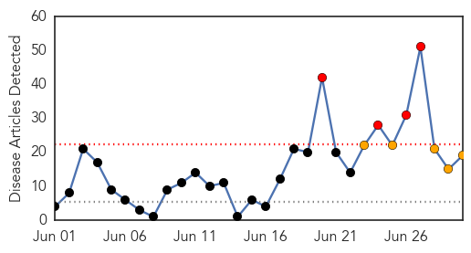

30 Day Trends
Web: 4 alerts, 5 warnings
Twitter: 5 alerts, 0 warnings
Top Articles:
- 1.000
- Could Ebola spread to the United States?
- 1.000
- Liberian President Warns Against Hiding Ebola Patients
- 1.000
- Liberian president warns against hiding Ebola patients
- 1.000
- West African nations should be prepared for Ebola: WHO expert
- 1.000
- Winona Daily News
- 1.000
- Liberia vows prosecution for hiding Ebola patients amid regional epidemic
- 0.999
- Risk of Ebola spread in west Africa, WHO warns
- 0.999
- 182 die from ebola in Guinea, says health officer
- 0.999
- Ebola outbreak needs urgent action
- 0.999
- WHO provides expertise to combat ebola outbreak
- 0.998
- West Africa can’t manage the Ebola outbreak
- 0.998
- U.S. groups provide relief from Ebola in West Africa
- 0.998
- Ebola outbreak 'not out of hand', UN health agency says readying response
- 0.995
- Brother's Brother Foundation Calls for Donations to Cope With West Africa Ebola Outbreak
- 0.993
- Liberia warns against hiding Ebola patients
- 0.981
- TB, swine flu assaulting border agents
- 0.973
- Samaritan's Purse sending Canadian medical specialists to Liberia to fight deadly Ebola virus
- 0.964
- UNICEF-Liberia Ebola Virus Disease: SitRep #30, 30 June 2014 - Liberia
- 0.939
- Humanitarian funding analysis: Ebola outbreak in Sierra Leone - Sierra Leone
Top Tweets:
-
No tweets found for Jun 30, 2014
Web/News Articles
Tweets

Article Locations

Article Confidences